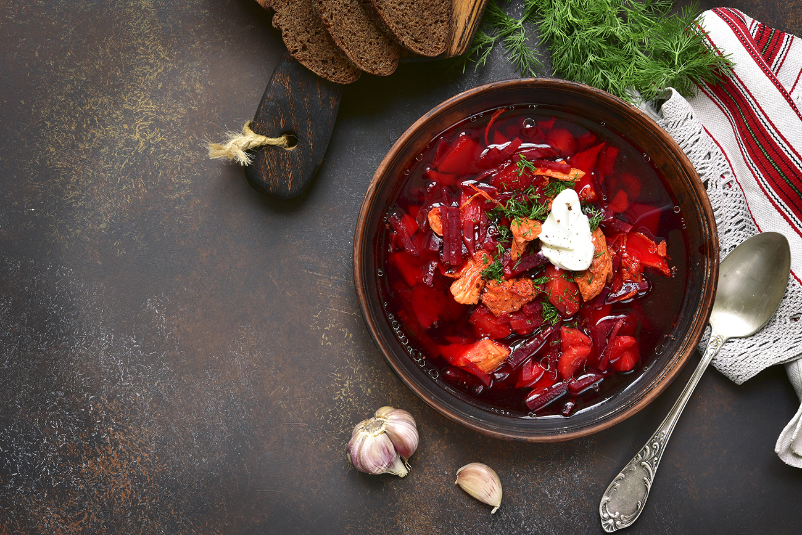

Borsch is one of the most famous dishes in Ukrainian cuisine, known for its vibrant red color and rich flavor. The origins of this beloved soup trace back centuries, where it was prepared as a staple in rural Ukrainian households. Traditionally, borsch is made with beetroot, giving it the distinct color, and can vary in ingredients depending on the region and family recipe. It has become a symbol of Ukrainian identity, often served with sour cream and accompanied by garlic bread known as pampushky.
Core Ingredients
- Beetroot
- Cabbage
- Potatoes
- Carrots
- Onions
- Garlic
- Tomato paste
- Meat (optional, usually pork or beef)
- Dill or parsley for garnish
- Sour cream for serving
Optional Ingredients
- Beans
- Peppers
- Mushrooms
How to Make Ukrainian Borsch
- Prepare the broth: Begin by boiling meat with water to create a rich broth.
- Cook the vegetables: Sauté the beets, carrots, and onions separately with tomato paste.
- Add vegetables to broth: Once the broth is ready, add chopped cabbage, potatoes, and other vegetables.
- Simmer: Let everything simmer for 30-40 minutes to allow the flavors to meld.
- Serve: Garnish with fresh herbs and a dollop of sour cream.
Common Variations of Borsch
- Vegetarian borsch: Uses no meat but relies on vegetable broth.
- Green borsch: A variation that uses sorrel instead of beets for a more sour flavor.
- Cold borsch: Served chilled and is popular during summer months.
Benefits of Eating Borsch
- High in fiber from vegetables
- Packed with vitamins like Vitamin C from the beets and cabbage
- A filling and nutritious meal for any time of the year
For more information on Ukrainian cuisine, check out this article on Ukrainian cuisine on Wikipedia. If you'd like to dive deeper into the history of borsch, visit this detailed article about Ukrainian borscht.